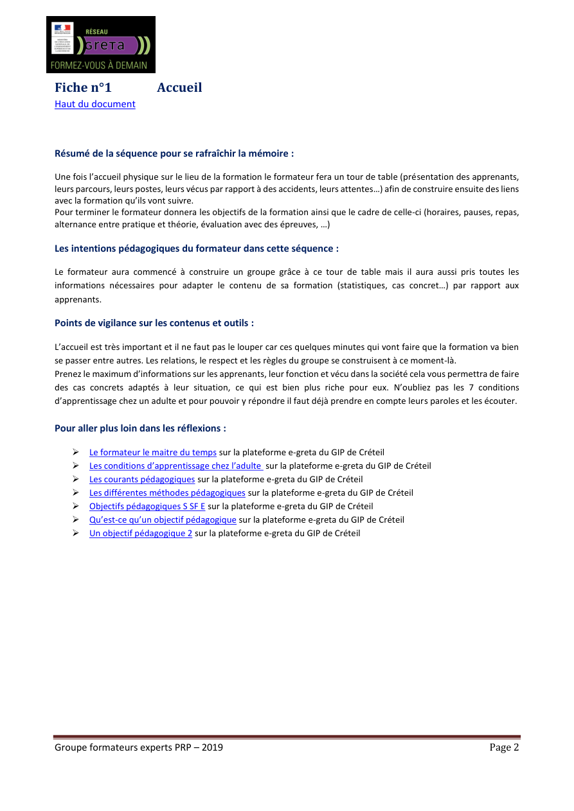

Gestes
Relier alerte et conduite à tenir sans rupture.
Compétence C4
Choisir le bon numéro, transmettre sans perte d'information et préparer l'arrivée des secours en articulant alerte externe, interne et relais témoin.
Relier alerte et conduite à tenir sans rupture.
Ouvrir immédiatement le PI, le livret et les supports intégrés.
Continuer vers la phase secourir ou vers une fiche d’urgence.
Repère opérationnel à mémoriser et à afficher près des postes d'appel.
Format court, robuste, transmissible par téléphone ou par écrit.
« Ici [Nom], SST sur [site + adresse exacte + point d'accès]. Nous avons [type d'accident ou malaise]. Il y a [nombre] victime(s). La victime est [consciente / inconsciente / respire / ne respire pas / saigne abondamment]. Le danger persistant est [oui/non + précision]. Les gestes en cours sont [compression / PLS / RCP / refroidissement]. Vous pouvez me rappeler au [numéro]. »
Exemple 114 : « URGENCE SST. Atelier B, 14 rue des Forges, entrée quai 2. Homme 52 ans inconscient, ne respire pas normalement. RCP commencée, DAE demandé. Machine arrêtée. Je ne peux pas parler. Rappel SMS nécessaire. »


Chaque alerte doit déjà préparer l’accès à la bonne branche : hémorragie, inconscience, arrêt cardiaque, DAE.
Compléter l'apprentissage avec les assets locaux déjà présents dans le dépôt : PI source, livret et PDF de référence.